Contents
- bsnr Gallery
- Path setup
- PART 1 — Synthetic fixtures: concepts and comparisons
- 1. Noise window strategies
- 2. Lurton formula vs simple power ratio
- 3. Calibrated acoustic levels
- 4. Click removal
- 5. Duty cycle and mean-power SNR
- 6. Distribution-based methods — quantiles and NIST
- 6a. Quantiles
- 6b. NIST histogram
- 7. Ridge and synchrosqueeze — FM signal
- 7b. Ridge smoothing — when it helps and when it does not
- PART 2 — Real recordings: functional demos
- 8b. Annotation trimming — real ABW D-call
- 9a. Tonal calls — ABW A, B, Z
- 9b. FM and pulsed calls — ABW D, Fin 40Hz, Fin 20Hz
- 10. Method comparison — SNR heatmap
- 11. Tethys round-trip — read, estimate, write
- Step 1: Show a snippet of the input XML
- Step 2: Read and display parsed annotation
- Step 3: Remap to bundled clip and estimate SNR
- Step 4: Write enriched results and show output XML snippet
- Local helpers
bsnr Gallery
Illustrated reference for the bsnr SNR estimation toolbox.
Part 1 illustrates each method on synthetic signals, with every section self-contained: signal generation, SNR estimation, and display in one block. Synthetic signals allow controlled comparison across methods at known SNR.
Part 2 demonstrates each method on real Antarctic baleen whale recordings from the IWC-SORP Annotated Library (Miller et al. 2021), with spectrogram parameters matched to the published figures.
Audio clips (CC-BY 4.0, included in examples/audio/): Miller et al. (2021). doi:10.26179/5e6056035c01b
To publish to HTML:
cd C:\analysis\bsnr\examples
publishDocs
close all; galleryDir = fileparts(mfilename('fullpath')); audioDir = fullfile(galleryDir, 'audio');
Path setup
Add bsnr and its dependencies to the MATLAB path if not already present. Edit analysisRoot to match your local installation.
sourceDir = fileparts(galleryDir); addpath(sourceDir, '-begin'); addpath(galleryDir, '-begin'); analysisRoot = 'C:\analysis'; deps = { 'longTermRecorders', fullfile(analysisRoot, 'longTermRecorders') 'annotatedLibrary', fullfile(analysisRoot, 'annotatedLibrary') 'bsmTools', fullfile(analysisRoot, 'bsmTools') 'soundFolder', fullfile(analysisRoot, 'soundFolder') }; existingPaths = strsplit(path, pathsep); for d = 1:size(deps, 1) depDir = deps{d, 2}; if exist(depDir, 'dir') && ~any(strcmp(existingPaths, depDir)) addpath(depDir); end end addpath(sourceDir, '-begin'); addpath(galleryDir, '-begin'); testsDir = fullfile(sourceDir, 'tests'); if exist(testsDir, 'dir') && ~any(strcmp(existingPaths, testsDir)) addpath(testsDir, '-begin'); end
PART 1 — Synthetic fixtures: concepts and comparisons
Each section in Part 1 builds a minimal synthetic fixture, runs one or more SNR methods, and displays the result. The fixtures are designed to make a single conceptual point clearly; real calls are in Part 2.
1. Noise window strategies
The noise window placement affects how well the estimated noise level represents the true background at the time of the detection.
|'beforeAndAfter'| — symmetric windows 0.5 s before and after signal (default) |'before'| — single window immediately before signal, no gap |'25sBefore'| — single 25 s window placed before the detection
For a stationary synthetic signal all three give similar SNR (as expected). The noise extent is shown in red on each spectrogram.
noiseWinFreq = [150 250]; noiseWinSR = 2000; noiseWinDetDur = 4; % s noiseWinPreBuf = 32; % s — needs 25+0.5+1+2 = 28.5 s before signal noiseWinPostBuf = 5; % s noiseWinWbRMS = 0.1 * sqrt(noiseWinSR/2 / diff(noiseWinFreq)); rng(71); noiseWinDetTime = (0:round(noiseWinDetDur*noiseWinSR)-1)' / noiseWinSR; noiseWinDetAudio = 0.5*sin(2*pi*200*noiseWinDetTime) + ... noiseWinWbRMS * randn(round(noiseWinDetDur*noiseWinSR), 1); noiseWinFullAudio = [noiseWinWbRMS * randn(round(noiseWinPreBuf * noiseWinSR), 1); ... noiseWinDetAudio; ... noiseWinWbRMS * randn(round(noiseWinPostBuf * noiseWinSR), 1)]; [annotNW, cleanupNW] = audioToFixture(noiseWinFullAudio, noiseWinSR, noiseWinFreq, ... noiseWinDetDur, 'Tone: noise window comparison', noiseWinPreBuf); figNW = figure('Name', 'noise window strategies', ... 'Units', 'pixels', 'Position', [50 50 900 260]); tloNW = tiledlayout(figNW, 1, 3, 'TileSpacing', 'compact', 'Padding', 'compact'); title(tloNW, '1. Noise window placement strategies', 'FontWeight', 'bold'); noiseStrategies = {'beforeAndAfter', 'before', '25sBefore'}; preBuffers = [1, 1, 2]; for s = 1:3 nexttile(tloNW); paramsNW = makeParams('spectrogram', fixtureSP(noiseWinSR, noiseWinFreq)); paramsNW.noiseLocation = noiseStrategies{s}; paramsNW.noiseDelay = 0.5; sp = fixtureSP(noiseWinSR, noiseWinFreq); sp.pre = preBuffers(s); paramsNW.plotParams = sp; runAndTitle(annotNW, paramsNW, noiseStrategies{s}); end cleanupNW();
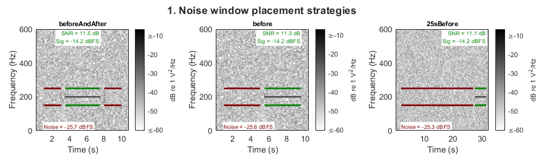
2. Lurton formula vs simple power ratio
Both formulas compute SNR from the same mean signal (S) and noise (N) band power, but differ in how they penalise an unreliable noise background.
|SNR_simple = 10*log10( S / N )|
|SNR_Lurton = 10*log10( (S - N)^2 / noiseVar )|
The Lurton formula (Lurton 2010, eq. 6.26; "An Introduction to Underwater Acoustics", 2nd ed., Springer) has two key differences from the simple power ratio:
1. It uses the excess signal above noise (S - N) rather than raw signal level S. This penalises cases where S is only slightly above N, even if the ratio S/N looks reasonable.
2. It normalises by noiseVar — the variance of per-slice noise band power. A wide noise distribution (intermittent background) reduces the Lurton SNR even when the noise mean is identical. This reflects the intuition that a reliable noise floor is more useful than an unreliable one of the same average level.
Columns: low SNR and high SNR with stationary Gaussian noise (noiseVar is small), and a case with the same mean noise RMS but bursty noise (alternating quiet/loud periods, noiseVar is large). The simple SNR is similar across columns 2 and 3; the Lurton SNR is lower for column 3.
Rows:
Row 1 — Spectrogram: visually similar across all columns since the noise mean is the same; the 200 Hz tone is visible in all three.
Row 2 — Slice power distributions: red histogram = per-slice noise band power; green = signal. The horizontal error bar spans ±1 std of the noise distribution, making noiseVar visually tangible. The wider bar in column 3 directly explains the suppressed Lurton SNR.
lurtonFreq = [150 250];
lurtonSR = 2000;
lurtonDur = 4;
lurtonBuf = 5;
lurtonWbRMS = 0.1 * sqrt(lurtonSR/2 / diff(lurtonFreq));
lurtonNDet = round(lurtonDur * lurtonSR);
lurtonNBuf = round(lurtonBuf * lurtonSR);
lurtonTime = (0:lurtonNDet-1)' / lurtonSR;
lurtonTone = 0.5 * sin(2*pi*200*lurtonTime);
lurtonLowRMS = lurtonWbRMS / sqrt(2.6);
lurtonHighRMS = 3 * lurtonLowRMS;
rng(22);
stationaryBuf = lurtonWbRMS * randn(lurtonNBuf, 1);
configs = {
'Low SNR (sig=0.1)', 0.1 * sin(2*pi*200*lurtonTime), stationaryBuf
'High SNR (sig=0.5)', lurtonTone, stationaryBuf
'Bursty noise', lurtonTone, ...
makeBurstyNoise(lurtonNBuf, lurtonSR, lurtonLowRMS, lurtonHighRMS, 0.5)
};
nLurtonCols = size(configs, 1);
figLurton = figure('Name', 'Lurton vs simple', ...
'Units', 'pixels', 'Position', [50 50 900 460]);
tloLurton = tiledlayout(figLurton, 2, nLurtonCols, ...
'TileSpacing', 'tight', 'Padding', 'tight');
title(tloLurton, '2. Lurton SNR: spectrogram (top) | slice distributions (bottom)', ...
'FontWeight', 'bold');
for k = 1:nLurtonCols
sigAudio = configs{k,2} + lurtonWbRMS * randn(lurtonNDet, 1);
[annotL, cleanupL] = audioToFixture( ...
[configs{k,3}; sigAudio; stationaryBuf], lurtonSR, lurtonFreq, lurtonDur, ...
configs{k,1}, lurtonBuf);
paramsLurton = makeParams('spectrogram', fixtureSP(lurtonSR, lurtonFreq));
paramsLurton.useLurton = true;
nexttile(tloLurton, k);
runAndTitle(annotL, paramsLurton, configs{k,1});
nexttile(tloLurton, k + nLurtonCols);
paramsLurtonHist = paramsLurton;
paramsLurtonHist.displayType = 'histogram';
runAndTitle(annotL, paramsLurtonHist, [configs{k,1} ' | distributions']);
cleanupL();
end
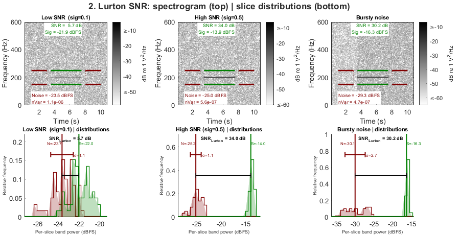
3. Calibrated acoustic levels
When instrument metadata is provided, bsnr converts outputs to calibrated dB re 1 µPa. SNR is dimensionless and unchanged by calibration; absolute signal and noise levels shift by the calibration offset.
The reference signal is a 122 dB re 1 µPa RMS tone at 100 Hz — the standard DIFAR sonobuoy calibration reference — in a noise background of 90 dB re 1 µPa. createCalibratedTestFixture models the AAD Kerguelen 2024 hydrophone instrument chain:
Hydrophone sensitivity: -165.9 dB re V/µPa ADC peak voltage: 1.5 V (3 V peak-to-peak, 16-bit) Front-end gain: ~20 dB flat 20–2000 Hz, AC-coupled below 5 Hz
The spectrogram colour axis shifts from dB re 1 V^2/Hz to dB re 1 µPa^2/Hz. The SNR value is identical before and after calibration.
[annotCal, calMetadata, cleanupCal] = createCalibratedTestFixture( ... 'signalLeveldB', 122, 'noiseLeveldB', 90, ... 'toneFreqHz', 100, 'freq', [80 120], 'durationSec', 4, ... 'classification', '122 dB re 1 µPa tone at 100 Hz'); calSP = struct('yLims', [0 300], 'pre', 1, 'post', 1); figCal = figure('Name', 'calibration', ... 'Units', 'pixels', 'Position', [50 50 600 260]); tloCal = tiledlayout(figCal, 1, 2, 'TileSpacing', 'compact', 'Padding', 'compact'); title(tloCal, '3. Calibration: dB re 1 V^2/Hz (left) vs dB re 1 µPa^2/Hz (right)', ... 'FontWeight', 'bold'); nexttile(tloCal); runAndTitle(annotCal, makeParams('spectrogram', calSP), 'Uncalibrated'); nexttile(tloCal); paramsCal = makeParams('spectrogram', calSP); paramsCal.metadata = calMetadata; runAndTitle(annotCal, paramsCal, 'Calibrated (dB re 1 µPa)'); cleanupCal();
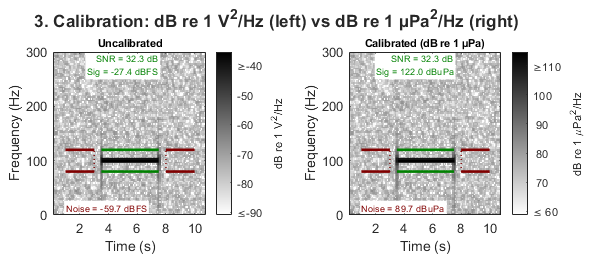
4. Click removal
Impulsive noise inflates SNR estimates by raising the measured noise or signal band power. removeClicks applies a PAMGuard-style soft amplitude gate: frames exceeding threshold × median RMS are attenuated by raising the signal envelope to the power power (which should be < 1 to suppress rather than amplify; 1000 gives near-complete suppression).
Synthetic clicks are 5 ms in-band sine bursts at amplitude = 30, spaced 0.5 s apart in the detection window — well above the removal threshold.
Left: raw spectrogram and inflated SNR. Right: after click removal (threshold = 3, power = 1000) — the spectrogram shows the cleaned audio and SNR recovers toward the true value.
clickFreq = [150 250]; clickSR = 2000; clickBufDur = 5; clickDetDur = 4; clickWbRMS = 0.1 * sqrt(clickSR/2 / diff(clickFreq)); clickNBuf = round(clickBufDur * clickSR); clickNDet = round(clickDetDur * clickSR); rng(61); clickDetTime = (0:clickNDet-1)' / clickSR; clickNoiseBuf = clickWbRMS * randn(clickNBuf, 1); clickDetAudio = 0.5*sin(2*pi*200*clickDetTime) + clickWbRMS*randn(clickNDet, 1); clickBurstLen = round(0.005 * clickSR); clickBurstAmp = 30 * sin(2*pi*200*(0:clickBurstLen-1)' / clickSR); for clickStart = round((0.5:0.5:clickDetDur-0.5) * clickSR) idx = clickStart : clickStart + clickBurstLen - 1; clickDetAudio(idx) = clickDetAudio(idx) + clickBurstAmp; end [annotClicks, cleanupClicks] = audioToFixture( ... [clickNoiseBuf; clickDetAudio; clickNoiseBuf], clickSR, clickFreq, clickDetDur, ... 'Tone + in-band clicks every 0.5 s (amplitude=30)', clickBufDur); figClick = figure('Name', 'click removal', ... 'Units', 'pixels', 'Position', [50 50 600 260]); tloClick = tiledlayout(figClick, 1, 2, 'TileSpacing', 'compact', 'Padding', 'compact'); title(tloClick, '4. Click removal (threshold=3, power=1000)', 'FontWeight', 'bold'); nexttile(tloClick); runAndTitle(annotClicks, makeParams('spectrogram', fixtureSP(clickSR, clickFreq)), ... 'Without click removal'); nexttile(tloClick); paramsClick = makeParams('spectrogram', fixtureSP(clickSR, clickFreq)); paramsClick.removeClicks = struct('threshold', 3, 'power', 1000); runAndTitle(annotClicks, paramsClick, 'With click removal'); cleanupClicks();
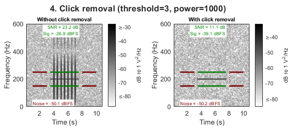
5. Duty cycle and mean-power SNR
All mean-power methods (spectrogram, spectrogramSlices, timeDomain) average signal power over the entire annotation window, including any silent gaps. For a pulsed call like the Antarctic minke whale bio-duck, the annotation covers the whole bout rather than individual pulses. The mean power is therefore diluted by the inter-pulse gaps, giving a lower SNR than would be measured on a single pulse.
This is not a flaw — it accurately reflects the detection challenge: a passive detector sees the mean energy in its integration window, and a pulsed call is genuinely harder to detect than a continuous one of the same peak level.
Three panels at the same peak pulse RMS (0.5):
- Continuous tone — 100% duty cycle; full power throughout the window.
- Pulsed tone, 50% duty cycle — same peak, half the mean power (~3 dB lower).
- Bio-duck bout — realistic A1 call structure (Dominello & Sirovic 2016): 4 pulses × 0.1 s, 0.3 s inter-pulse, 3.1 s inter-series; ~9% duty cycle, ~10 dB lower SNR than the continuous case.
The ridge method (Section 7) is not affected by duty cycle because it measures power at the instantaneous ridge frequency only in slices where the ridge is present, not the window mean.
dutyCycleFreq = [150 250]; dutyCycleSP = fixtureSP(2000, dutyCycleFreq); [annotCont, cleanupCont] = createTestFixture('sampleRate', 2000, 'durationSec', 10, ... 'toneFreqHz', 200, 'freq', dutyCycleFreq, 'signalRMS', 0.5, 'noiseRMS', 0.1, ... 'classification', 'Continuous tone (100% duty cycle)'); rng(21); pulseSR = 2000; pulseDur = 10; pulseBufDur = 7; pulseWbRMS = 0.1 * sqrt(pulseSR/2 / diff(dutyCycleFreq)); nPulseDet = round(pulseDur * pulseSR); pulseTime = (0:nPulseDet-1)' / pulseSR; pulsedTone = 0.5 * sin(2*pi*200*pulseTime); blockSamps = round(0.5 * pulseSR); for b = 1:2:floor(nPulseDet/blockSamps) offIdx = (b-1)*blockSamps+1 : min(b*blockSamps, nPulseDet); pulsedTone(offIdx) = 0; end pulseBuf = pulseWbRMS * randn(round(pulseBufDur*pulseSR), 1); [annotPulsed, cleanupPulsed] = audioToFixture( ... [pulseBuf; pulsedTone + pulseWbRMS*randn(nPulseDet,1); pulseBuf], ... pulseSR, dutyCycleFreq, pulseDur, ... 'Pulsed tone 50% duty cycle (0.5 s on/off)', pulseBufDur); [annotBioduck, cleanupBioduck] = createTestFixture('sampleRate', 1000, 'durationSec', 20, ... 'signalType', 'bioduck', 'freqHigh', 200, 'freqLow', 60, ... 'pulseDuration', 0.10, 'pulseInterval', 0.30, ... 'pulsesPerSeries', 4, 'seriesInterval', 3.10, ... 'signalRMS', 0.5, 'noiseRMS', 0.1, ... 'freq', [30 250], 'classification', 'Bio-duck A1 bout (~9% duty cycle)'); bioduckSP = struct('yLims', [0 300], 'pre', 1, 'post', 1); figDuty = figure('Name', 'duty cycle', ... 'Units', 'pixels', 'Position', [50 50 900 260]); tloDuty = tiledlayout(figDuty, 1, 3, 'TileSpacing', 'compact', 'Padding', 'compact'); title(tloDuty, '5. Duty cycle — mean-power SNR reflects window-averaged energy', ... 'FontWeight', 'bold'); nexttile(tloDuty); snrCont = runAndTitle(annotCont, makeParams('spectrogram', dutyCycleSP), 'Continuous tone'); nexttile(tloDuty); snrPulsed = runAndTitle(annotPulsed, makeParams('spectrogram', dutyCycleSP), 'Pulsed 50% duty cycle'); nexttile(tloDuty); snrBioduck = runAndTitle(annotBioduck, makeParams('spectrogram', bioduckSP), 'Bio-duck A1 (~9% duty)'); fprintf(' Expected: continuous=%.1f dB, pulsed~%.1f dB (-3 dB), bio-duck~%.1f dB (-10 dB)\n', ... snrCont, snrCont-3, snrCont-10); cleanupCont(); cleanupPulsed(); cleanupBioduck();
Expected: continuous=11.3 dB, pulsed~8.3 dB (-3 dB), bio-duck~1.3 dB (-10 dB)
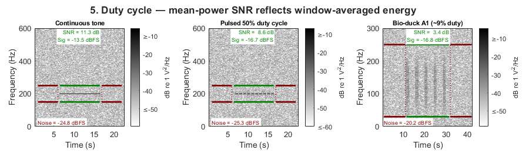
6. Distribution-based methods — quantiles and NIST
Both methods estimate SNR from an energy distribution rather than comparing separate signal and noise windows.
Quantiles splits the 2D distribution of spectrogram TF cell PSD values within the signal window: the top 15% of cells by power are treated as signal; the bottom 85% as noise. No separate noise window is needed — the within-window distribution itself provides the signal/noise separation.
The NIST method (NIST 1992) computes a 1D histogram of wideband 20 ms frame energies pooled from both the noise and signal windows. It fits a raised cosine to the leftmost histogram peak (the noise mode) and takes the 95th percentile of the residual as the signal level.
Each method is shown with two display types:
- Top row — spectrogram with iso-power contour lines at the estimated noise and signal PSD thresholds. For quantiles, these contours are literal quantile boundaries of the TF cell distribution.
- Bottom row — histogram of the underlying energy distribution, with vertical lines at the estimated noise (red) and signal (green) levels.
The parallel display makes the conceptual relationship visible: quantiles uses TF cells from the signal window only (2D distribution over the band); NIST uses scalar frame energies from both windows (1D distribution).
All three columns use a synthetic Southern Right Whale (SRW) upcall: f(t) = 80 + 118t^2 Hz, 1 s at 1000 Hz. The diagonal TF streak is more illustrative than a stationary tone because iso-power contours follow the call energy regardless of instantaneous frequency.
srwFreq = [75 210]; srwBufDur = 4; srwSP = struct('yLims', [0 250], 'pre', 1, 'post', 1); distConfigs = {'Noise only', 0.0, 0.1; 'Moderate SNR', 0.3, 0.1; 'High SNR', 1.0, 0.1}; nDist = size(distConfigs, 1); srwAnnots = cell(nDist, 1); srwCleanups = cell(nDist, 1); srwWbRMS = 0.1 * sqrt(500 / diff(srwFreq)); nSrwBuf = round(srwBufDur * 1000); rng(71); for k = 1:nDist [sweep, ~] = makeSRWUpcall(1000, 0.0); detAudio = distConfigs{k,2} * sweep + srwWbRMS * randn(length(sweep), 1); noiseBuf = srwWbRMS * randn(nSrwBuf, 1); [srwAnnots{k}, srwCleanups{k}] = audioToFixture( ... [noiseBuf; detAudio; noiseBuf], 1000, srwFreq, 1.0, distConfigs{k,1}, srwBufDur); end
6a. Quantiles
figQ = figure('Name', 'quantiles', ... 'Units', 'pixels', 'Position', [50 50 900 460]); tloQ = tiledlayout(figQ, 2, nDist, 'TileSpacing', 'tight', 'Padding', 'tight'); title(tloQ, '6a. Quantiles: spectrogram contours (top) | TF cell histogram (bottom)', ... 'FontWeight', 'bold'); for k = 1:nDist nexttile(tloQ, k); runAndTitle(srwAnnots{k}, makeParams('quantiles', srwSP), distConfigs{k,1}); nexttile(tloQ, k + nDist); pQ = makeParams('quantiles', srwSP); pQ.displayType = 'histogram'; runAndTitle(srwAnnots{k}, pQ, [distConfigs{k,1} ' | histogram']); end
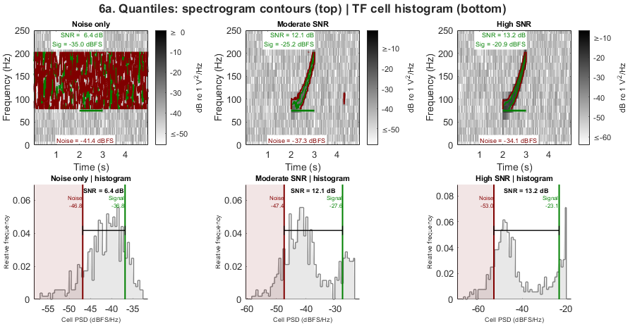
6b. NIST histogram
figN = figure('Name', 'NIST histogram', ... 'Units', 'pixels', 'Position', [50 50 900 460]); tloN = tiledlayout(figN, 2, nDist, 'TileSpacing', 'tight', 'Padding', 'tight'); title(tloN, '6b. NIST: spectrogram contours (top) | frame-energy histogram (bottom)', ... 'FontWeight', 'bold'); for k = 1:nDist nexttile(tloN, k); pNspec = makeParams('nist', srwSP); pNspec.displayType = 'spectrogram'; runAndTitle(srwAnnots{k}, pNspec, distConfigs{k,1}); nexttile(tloN, k + nDist); runAndTitle(srwAnnots{k}, makeParams('nist', []), [distConfigs{k,1} ' | histogram']); end for k = 1:nDist, srwCleanups{k}(); end
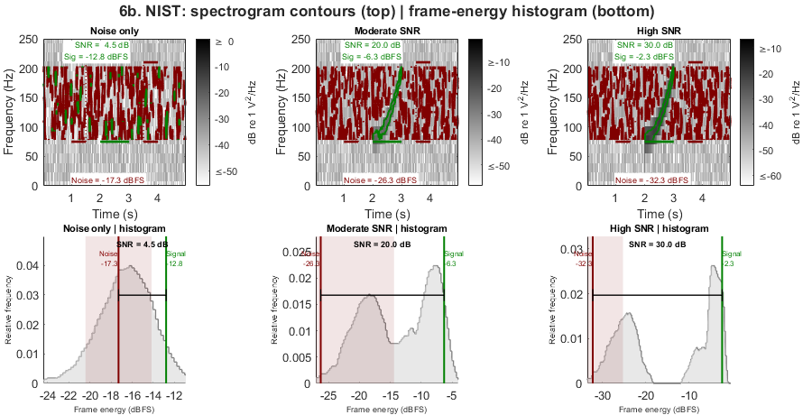
7. Ridge and synchrosqueeze — FM signal
The ridge method tracks the dominant instantaneous frequency using tfridge, measuring signal power from the single FFT bin on the ridge at each time step. synchrosqueeze first sharpens the TF representation via the Fourier synchrosqueezed transform (FSST) before ridge tracking.
Because signal power is concentrated at one bin and noise is averaged across all other in-band bins, per-bin SNR exceeds band-average SNR by approximately 10·log10(nBandBins). This makes ridge/synchrosqueeze systematically higher than the other methods — they measure a different quantity, not a better one.
Both are shown on the same SRW upcall used in Section 6. The cyan overlay shows the tracked instantaneous frequency ridge.
srwSR = 1000; srwFB = [75 210]; srwDur = 1.0; srwBuf3 = 3; [srwSig, ~] = makeSRWUpcall(srwSR, 0.1); rng(11); srwWbRMS3 = 0.1 * sqrt(srwSR/2 / 135); srwNoiseBuf3 = srwWbRMS3 * randn(round(srwBuf3 * srwSR), 1); srwFullAudio = [srwNoiseBuf3; srwSig; srwNoiseBuf3]; srwFullAudio = srwFullAudio * (0.9 / max(abs(srwFullAudio))); [annotSRW, cleanupSRW] = audioToFixture(srwFullAudio, srwSR, srwFB, srwDur, ... 'SRW upcall f(t)=80+118t^2 Hz', srwBuf3); figRidge = figure('Name', 'ridge + synchrosqueeze', ... 'Units', 'pixels', 'Position', [50 50 600 260]); tloRidge = tiledlayout(figRidge, 1, 2, 'TileSpacing', 'compact', 'Padding', 'compact'); title(tloRidge, '7. Ridge and synchrosqueeze on SRW upcall f(t) = 80+118t^2 Hz', ... 'FontWeight', 'bold'); srwDisp = struct('yLims', [0 250], 'pre', 1, 'post', 1); nexttile(tloRidge); snrRidgeVal = runAndTitle(annotSRW, makeParams('ridge', srwDisp), 'ridge (per-bin SNR)'); nexttile(tloRidge); snrSSQVal = runAndTitle(annotSRW, makeParams('synchrosqueeze', srwDisp), ... 'synchrosqueeze (FSST ridge)'); fprintf(' ridge=%.1f dB synchrosqueeze=%.1f dB (per-bin; ~10*log10(nBins) above band average)\n', ... snrRidgeVal, snrSSQVal); cleanupSRW();
ridge=27.6 dB synchrosqueeze=31.6 dB (per-bin; ~10*log10(nBins) above band average)
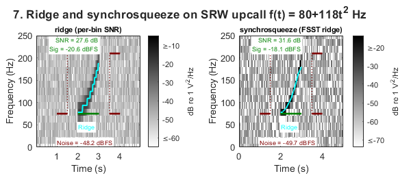
7b. Ridge smoothing — when it helps and when it does not
LOESS smoothing of the instantaneous frequency ridge reduces noise-driven wandering when annotation bounds are tight. With loose bounds (typical of analyst annotations), the energy-trim heuristic may select noise-dominated slices and the smooth fits the noise floor rather than the signal.
RECOMMENDED WORKFLOW annotTrimmed = trimAnnotation(annots); p.ridgeParams.ridgeSmoothSpan = 0.3; result = snrEstimate(annotTrimmed, p);
The default is ridgeSmoothSpan=0 (raw ridge) for safety. Enable smoothing only after verifying annotation bounds are tight for your dataset.
This section shows the same SRW upcall with: col 1 — loose annotation (3x signal duration), no smoothing col 2 — loose annotation, smoothing enabled col 3 — tight annotation (trimAnnotation applied), smoothing enabled
The analytic instantaneous frequency f(t) = 80 + 118t^2 Hz is shown as a dotted line for reference.
srwSR4 = 1000; srwFB4 = [75 210]; srwDur4 = 1.0; nfft4 = 64; nOvlp4 = floor(nfft4 * 0.75); [srwSig4, ~] = makeSRWUpcall(srwSR4, 0.3); rng(14); wbRMS4 = 0.3 * sqrt(srwSR4/2 / 135); buf4 = wbRMS4 * randn(round(3 * srwSR4), 1); full4 = [buf4; srwSig4; buf4]; full4 = full4 * (0.9 / max(abs(full4))); % Loose annotation — 3s buffer each side [annotLoose, cleanupLoose] = audioToFixture(full4, srwSR4, srwFB4, srwDur4, ... 'SRW upcall — loose bounds', 3); % Tight annotation — same audio, trimmed annotTight = trimAnnotation(annotLoose, 'freq', srwFB4); fig7b = figure('Name', '7b. Ridge smoothing — tight vs loose bounds', ... 'Units', 'pixels', 'Position', [50 50 900 320]); tlo7b = tiledlayout(fig7b, 1, 3, 'TileSpacing', 'compact', 'Padding', 'compact'); title(tlo7b, '7b. Ridge smoothing: loose bounds vs tight bounds (after trimAnnotation)', ... 'FontWeight', 'bold'); % Col 1: loose, no smoothing (default) nexttile(tlo7b); pLooseRaw = struct('snrType', 'ridge', 'nfft', nfft4, ... 'showClips', true, 'pauseAfterPlot', false); snrEstimate(annotLoose, pLooseRaw); title(gca, 'Loose bounds | raw ridge (default)', 'FontSize', 8); % Col 2: loose, smoothing on — shows failure mode nexttile(tlo7b); pLooseSmooth = struct('snrType', 'ridge', 'nfft', nfft4, ... 'showClips', true, 'pauseAfterPlot', false, ... 'ridgeParams', struct('ridgeSmoothSpan', 0.3)); snrEstimate(annotLoose, pLooseSmooth); title(gca, 'Loose bounds | smoothed (may fit noise)', 'FontSize', 8); % Col 3: tight (trimmed), smoothing on — recommended workflow nexttile(tlo7b); pTightSmooth = struct('snrType', 'ridge', 'nfft', nfft4, ... 'showClips', true, 'pauseAfterPlot', false, ... 'ridgeParams', struct('ridgeSmoothSpan', 0.3)); snrEstimate(annotTight, pTightSmooth); title(gca, 'Tight bounds (trimmed) | smoothed', 'FontSize', 8); cleanupLoose(); fprintf(' [PASS] Section 7b complete\n\n'); % Analysts often draw annotation boxes with generous time and frequency % buffers. |trimAnnotation| removes these margins by trimming to the % central 95% of in-band spectral energy, tightening both time and % frequency bounds before SNR estimation. % % This section uses a synthetic 200 Hz tone with 1.5s silence on each % side and a frequency box wider than the signal band. The trim diagnostic % shows the spectrogram with original (blue dashed) and trimmed (red) % bounds, plus the per-slice and per-bin energy profiles. [annotTone8, cleanup8] = createTestFixture( ... 'signalRMS', 1.0, 'noiseRMS', 0.1, ... 'toneFreqHz', 200, 'freq', [150 250], 'durationSec', 7); % Wide annotation: 1.5s margins each side, freq band wider than tone. % Keep within file bounds — annotTone8 starts at file start + small offset, % so extend tEnd only and use pre-signal audio for the start margin. annotWide8 = annotTone8; annotWide8.tEnd = annotTone8.tEnd + 1.5/86400; annotWide8.duration = (annotWide8.tEnd - annotWide8.t0) * 86400; annotWide8.freq = [100 300]; % symmetric about 200 Hz tone % Trim — shows diagnostic plot annotTrimmed8 = trimAnnotation(annotWide8, 'showPlot', true); fprintf(' Original: %.2f s [%.0f %.0f] Hz\n', ... annotWide8.duration, annotWide8.freq(1), annotWide8.freq(2)); fprintf(' Trimmed: %.2f s [%.0f %.0f] Hz\n', ... annotTrimmed8.duration, annotTrimmed8.freq(1), annotTrimmed8.freq(2)); % Report SNR before and after p8 = struct('snrType', 'spectrogramSlices', 'showClips', false); snrBefore8 = snrEstimate(annotWide8, p8).snr(1); snrAfter8 = snrEstimate(annotTrimmed8, p8).snr(1); fprintf(' SNR before trim: %.1f dB\n', snrBefore8); fprintf(' SNR after trim: %.1f dB\n', snrAfter8); cleanup8();
[PASS] Section 7b complete Original: 8.50 s [100 300] Hz Trimmed: 6.71 s [197 201] Hz SNR before trim: 13.4 dB SNR after trim: 29.6 dB
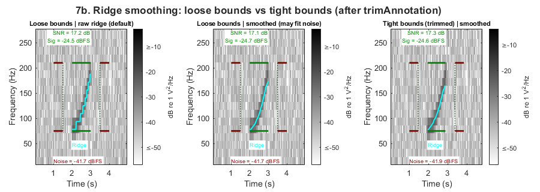
PART 2 — Real recordings: functional demos
Part 2 applies all seven methods to real Antarctic baleen whale recordings from the IWC-SORP Annotated Library (Miller et al. 2021). The audio clips were extracted from DIFAR sonobuoy recordings made near Kerguelen Island by the Australian Antarctic Division.
Spectrogram parameters are matched to the published figures in Miller et al. (2021) for each call type. The ABW A call band [24–28 Hz] is too narrow for reliable ridge tracking, so those methods return NaN for that call type and the cells are blank in the comparison heatmap.
Call types covered:
- ABW A — Antarctic blue whale (Bm) A-call: 10 s tonal, [24–28 Hz]
- ABW B — Bm B-call: 12 s tonal, [20–28 Hz]
- ABW Z — Bm Z-call: 21 s tonal, [17–28 Hz]
- ABW D — Bm D-call: 4 s FM downsweep, [44–72 Hz]
- Fin 40Hz — Fin whale 40 Hz call: 2 s pulsed, [32–61 Hz]
- Fin 20Hz — Fin whale 20 Hz call: 4 s tonal, [15–35 Hz]
callTypes = {
'ABW A' 'abw_a' 10 10 [24 28]
'ABW B' 'abw_b' 13 12 [20 28]
'ABW Z' 'abw_z' 17 21 [17 28]
'ABW D' 'abw_d' 11 4 [44 72]
'Fin 40Hz' 'bp_40' 8 2 [32 61]
'Fin 20Hz' 'bp_20' 7 4 [15 35]
};
nCallTypes = size(callTypes, 1);
callAnnots = cell(nCallTypes, 1);
callSP = cell(nCallTypes, 1);
callAvailable = false(nCallTypes, 1);
for ct = 1:nCallTypes
wavDir = fullfile(audioDir, callTypes{ct,2});
if ~exist(wavDir, 'dir'), continue; end
sf = wavFolderInfo(wavDir, '', false, false);
callAnnot.soundFolder = wavDir;
callAnnot.t0 = sf(1).startDate + callTypes{ct,3}/86400;
callAnnot.tEnd = callAnnot.t0 + callTypes{ct,4}/86400;
callAnnot.duration = callTypes{ct,4};
callAnnot.freq = callTypes{ct,5};
callAnnot.channel = 1;
callAnnot.classification = callTypes{ct,1};
callAnnots{ct} = callAnnot;
callSP{ct} = realCallSP(callTypes{ct,2});
callAvailable(ct) = true;
end
if ~any(callAvailable)
fprintf('\nNo real audio found in %s — skipping Part 2.\n', audioDir);
fprintf('Run prepareGalleryAudio.m or place clips in examples/audio/.\n');
return;
end
availableIdx = find(callAvailable);
nAvailable = numel(availableIdx);
fprintf('\n%d/%d call types available.\n', nAvailable, nCallTypes);
methodNames = {'spectrogram', 'spectrogramSlices', 'ridge', ...
'synchrosqueeze', 'quantiles', 'nist', 'timeDomain'};
nMethods = numel(methodNames);
snrByMethod = nan(nMethods, nCallTypes);
6/6 call types available.
8b. Annotation trimming — real ABW D-call
The same trimming applied to a real ABW D-call from the IWC-SORP Annotated Library. The original annotation has tight analyst bounds; we extend them to simulate generous buffering, then trim back. This section requires the audio clips in examples/audio/.
dIdx9 = find(strcmp(callTypes(:,1), 'ABW D'), 1); if ~isempty(dIdx9) && callAvailable(dIdx9) annotD9 = callAnnots{dIdx9}; % Extend to simulate generous box — use 1s margin to stay within clip marginSec9 = 1.0; annotWide9 = annotD9; annotWide9.t0 = annotD9.t0 - marginSec9/86400; annotWide9.tEnd = annotD9.tEnd + marginSec9/86400; annotWide9.duration = (annotWide9.tEnd - annotWide9.t0) * 86400; annotWide9.freq = [annotD9.freq(1) - 15, annotD9.freq(2) + 15]; annotTrimmed9 = trimAnnotation(annotWide9, 'showPlot', true, ... 'trimMethod', 'cumulative', ... 'timeStartPercentile', 10, 'timeEndPercentile', 20, 'freqPercentile', 10); if ~annotTrimmed9.trimApplied warning('Section 9: trim not applied — audio may not cover extended bounds'); end fprintf(' Original: %.2f s [%.0f %.0f] Hz\n', ... annotWide9.duration, annotWide9.freq(1), annotWide9.freq(2)); fprintf(' Trimmed: %.2f s [%.0f %.0f] Hz\n', ... annotTrimmed9.duration, annotTrimmed9.freq(1), annotTrimmed9.freq(2)); p9 = struct('snrType', 'spectrogramSlices', 'showClips', false); snrBefore9 = snrEstimate(annotWide9, p9).snr(1); snrAfter9 = snrEstimate(annotTrimmed9, p9).snr(1); fprintf(' SNR before trim: %.1f dB\n', snrBefore9); fprintf(' SNR after trim: %.1f dB\n', snrAfter9); else fprintf('9. Real trim: ABW D audio not available — skipping.\n'); end
Original: 6.00 s [29 87] Hz Trimmed: 2.67 s [43 66] Hz SNR before trim: -0.5 dB SNR after trim: 5.3 dB
9a. Tonal calls — ABW A, B, Z
Three Antarctic blue whale tonal calls covering a range of bandwidths and durations. The narrow [24–28 Hz] band of the A-call has fewer than 3 FFT bins at the nSlices-derived nfft, so ridge and synchrosqueeze return NaN for that call type.
tonalIdx = find(ismember(callTypes(:,1), {'ABW A', 'ABW B', 'ABW Z'}) & callAvailable);
snrByMethod = drawRealCallFigure(tonalIdx, callTypes, callAnnots, callSP, ...
methodNames, snrByMethod, '9a. Tonal calls — ABW A, B, Z');
Warning: Fewer than 3 FFT bins in [24.0 28.0] Hz — cannot track ridge. Warning: Fewer than 3 frequency bins in [24.0 28.0] Hz.
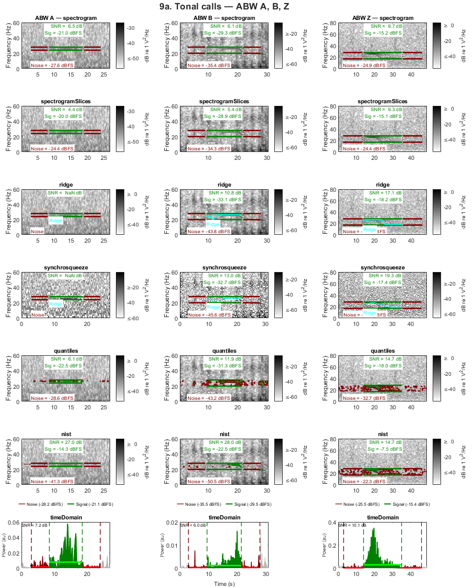
9b. FM and pulsed calls — ABW D, Fin 40Hz, Fin 20Hz
A frequency-modulated downsweep (ABW D) and two call types from fin whales. These have wider bands, shorter durations, or pulsed structure, providing a contrast with the narrow tonal calls in 8a.
fmIdx = find(ismember(callTypes(:,1), {'ABW D', 'Fin 40Hz', 'Fin 20Hz'}) & callAvailable);
snrByMethod = drawRealCallFigure(fmIdx, callTypes, callAnnots, callSP, ...
methodNames, snrByMethod, '9b. FM and pulsed calls — ABW D, Fin 40Hz, Fin 20Hz');
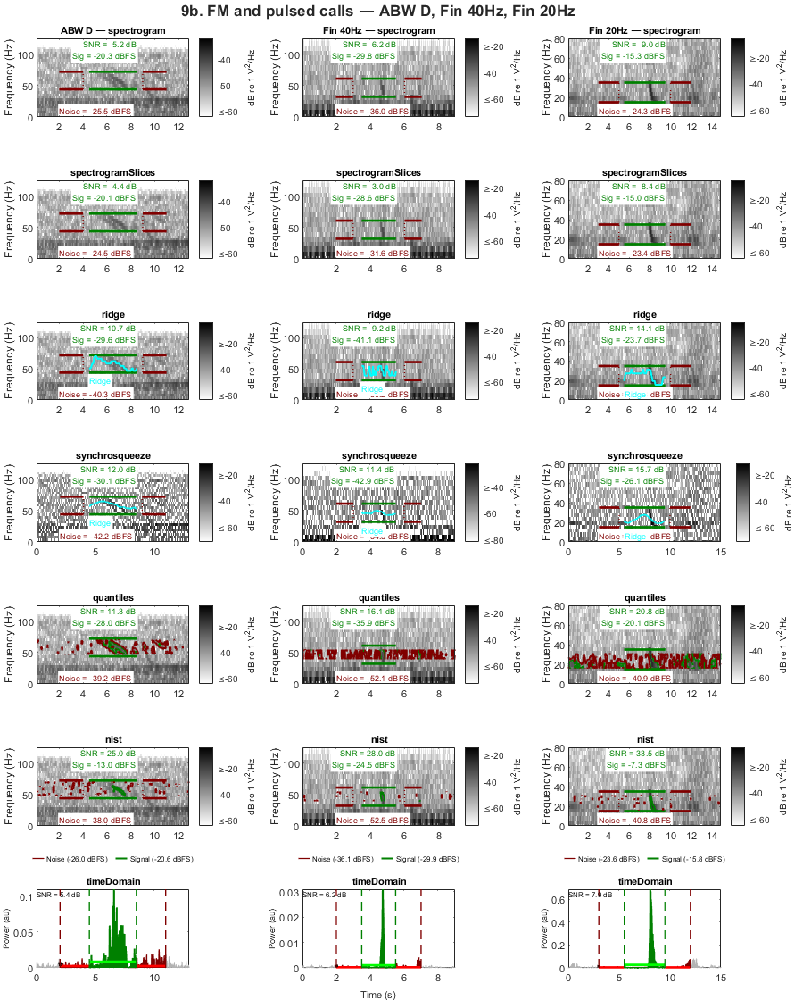
10. Method comparison — SNR heatmap
SNR estimates (dB, simple power ratio) for all seven methods across all available call types. Ridge and synchrosqueeze report per-bin SNR and are not directly comparable to the band-average methods; they are included for completeness and shown in the same colour scale.
colLabels = strrep(callTypes(availableIdx, 1)', ' ', '_'); snrTable = array2table(snrByMethod(:, availableIdx), ... 'RowNames', methodNames, 'VariableNames', colLabels); disp(snrTable); figHeat = figure('Name', 'comparison heatmap', ... 'Units', 'pixels', 'Position', [50 50 max(400, 120*nAvailable+200) 320]); axH = axes(figHeat); imagesc(axH, snrByMethod(:, availableIdx)); colormap(axH, 'parula'); cb = colorbar(axH); cb.Label.String = 'SNR (dB)'; set(axH, 'XTick', 1:nAvailable, 'XTickLabel', colLabels, ... 'YTick', 1:nMethods, 'YTickLabel', methodNames, ... 'TickLabelInterpreter', 'none', 'FontSize', 8); xtickangle(axH, 30); title(axH, '10. SNR by method and call type (dB)', 'FontWeight', 'bold'); for row = 1:nMethods for col = 1:nAvailable v = snrByMethod(row, availableIdx(col)); if isfinite(v) text(axH, col, row, sprintf('%.1f', v), ... 'HorizontalAlignment', 'center', 'VerticalAlignment', 'middle', ... 'FontSize', 7, 'Color', 'w', 'FontWeight', 'bold'); end end end fprintf('\n=== gallery complete ===\n'); fprintf('Audio: Miller et al. (2021) doi:10.26179/5e6056035c01b\n');
ABW_A ABW_B ABW_Z ABW_D Fin_40Hz Fin_20Hz
______ ______ ______ ______ ________ ________
spectrogram 6.5481 6.1112 9.7403 5.2091 6.2017 9.0338
spectrogramSlices 4.4271 5.419 9.2957 4.4495 2.963 8.4065
ridge NaN 10.783 17.1 10.672 9.1694 14.111
synchrosqueeze NaN 12.958 19.253 12.048 11.422 15.716
quantiles 6.0787 11.888 14.668 11.26 16.125 20.778
nist 27 28 14.75 25 28 33.5
timeDomain 7.1853 6.0153 10.091 5.3919 6.2496 7.865
=== gallery complete ===
Audio: Miller et al. (2021) doi:10.26179/5e6056035c01b
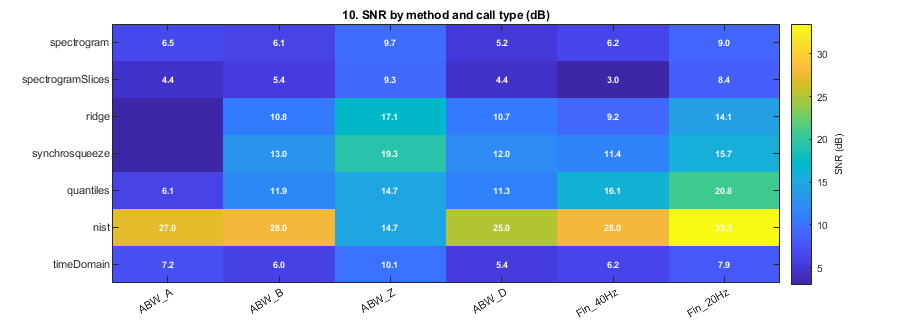
11. Tethys round-trip — read, estimate, write
Demonstrates the full workflow: reading detections from a Tethys XML file, estimating SNR, and writing enriched results back as Tethys-compatible XML.
The bundled tethys_example.xml contains 5 Antarctic blue whale Z-call detections in Tethys 3.x Detections format (Casey Station 2019). In a real workflow, replace this file with your own Tethys export or a document from a Tethys server query.
fprintf('\n--- Section 11: Tethys round-trip ---\n'); tethysXml = fullfile(fileparts(mfilename('fullpath')), 'tethys_example.xml'); audioDir = fullfile(fileparts(mfilename('fullpath')), 'audio', 'abw_z'); if ~isfile(tethysXml) fprintf(' tethys_example.xml not found — skipping section 11.\n'); else
Step 1: Show a snippet of the input XML
fprintf('\nStep 1 — Input Tethys XML (tethys_example.xml):\n'); fprintf('%s\n', repmat('-', 1, 60)); xmlLines = strsplit(fileread(tethysXml), newline); % Print the first Detection element (lines ~40-55) inDetection = false; printedLines = 0; for k = 1:numel(xmlLines) ln = strtrim(xmlLines{k}); if contains(ln, '<Detection>'), inDetection = true; end if inDetection fprintf(' %s\n', ln); printedLines = printedLines + 1; end if contains(ln, '</Detection>') && inDetection break end end fprintf('%s\n', repmat('-', 1, 60));
Step 1 — Input Tethys XML (tethys_example.xml): ------------------------------------------------------------ <Detection> <Start>2019-04-12T03:17:00</Start> <End>2019-04-12T03:17:21</End> <Parameters> <Subtype>ABW Z</Subtype> <MinFreq_Hz>17.0</MinFreq_Hz> <MaxFreq_Hz>28.0</MaxFreq_Hz> <Duration_s>21.0</Duration_s> </Parameters> </Detection> ------------------------------------------------------------
Step 2: Read and display parsed annotation
fprintf('\nStep 2 — readTethysDetections → bsnr annotation struct:\n'); annotsT = readTethysDetections(tethysXml, audioDir); an = annotsT(1); fprintf(' Start: %s\n', datestr(an.t0, 'yyyy-mm-dd HH:MM:SS')); fprintf(' End: %s\n', datestr(an.tEnd, 'yyyy-mm-dd HH:MM:SS')); fprintf(' Duration: %.1f s\n', an.duration); fprintf(' Freq: [%.0f %.0f] Hz\n', an.freq(1), an.freq(2)); fprintf(' Type: %s\n', an.classification);
Step 2 — readTethysDetections → bsnr annotation struct: Start: 2019-04-12 03:17:00 End: 2019-04-12 03:17:21 Duration: 21.0 s Freq: [17 28] Hz Type:
Step 3: Remap to bundled clip and estimate SNR
Start/End in the example file are Casey 2019 absolute UTC. Remap to the bundled ABW Z-call clip for demonstration.
sf = wavFolderInfo(audioDir, '', false, false); annotsT(1).t0 = sf(1).startDate + 17/86400; annotsT(1).tEnd = annotsT(1).t0 + annotsT(1).duration / 86400; annotsT(1).soundFolder = audioDir; fprintf('\nStep 3 — snrEstimate (spectrogramSlices, nfft=512):\n'); p11 = struct('snrType', 'spectrogramSlices', 'nfft', 512, 'showClips', false); result11 = snrEstimate(annotsT, p11); fprintf(' SNR = %.1f dB\n', result11.snr(1));
Step 3 — snrEstimate (spectrogramSlices, nfft=512): SNR = 9.5 dB
Step 4: Write enriched results and show output XML snippet
outXml = fullfile(tempdir, 'bsnr_tethys_results.xml'); writeTethysXml(result11, annotsT, ... 'project', 'AADC-Casey2019', ... 'deploymentId', 'Casey2019_01', ... 'software', 'bsnr', ... 'version', '0.3.0-beta', ... 'outputFile', outXml); fprintf('\nStep 4 — Output XML snippet (first Detection with SNR_dB added):\n'); fprintf('%s\n', repmat('-', 1, 60)); outLines = strsplit(fileread(outXml), newline); inDetection = false; for k = 1:numel(outLines) ln = strtrim(outLines{k}); if contains(ln, '<Detection>'), inDetection = true; end if inDetection fprintf(' %s\n', ln); end if contains(ln, '</Detection>') && inDetection break end end fprintf('%s\n', repmat('-', 1, 60)); fprintf(' → SNR_dB and ReceivedLevel_dB added as native Tethys Parameters fields\n'); fprintf(' → Output: %s\n', outXml);
Wrote 1 detections to C:\Users\brian_mil\AppData\Local\Temp\bsnr_tethys_results.xml Step 4 — Output XML snippet (first Detection with SNR_dB added): ------------------------------------------------------------ <Detection> <Start>2026-04-06T11:08:39</Start> <End>2026-04-06T11:09:00</End> <Parameters> <SNR_dB>9.5224</SNR_dB> <MinFreq_Hz>17.00</MinFreq_Hz> <MaxFreq_Hz>28.00</MaxFreq_Hz> <Duration_s>21.0000</Duration_s> </Parameters> </Detection> ------------------------------------------------------------ → SNR_dB and ReceivedLevel_dB added as native Tethys Parameters fields → Output: C:\Users\brian_mil\AppData\Local\Temp\bsnr_tethys_results.xml
end
--- Section 11: Tethys round-trip ---
Local helpers
function snrValue = runAndTitle(annot, params, titleStr) snrValue = snrEstimate(annot, params).snr(1); title(gca, titleStr, 'interpreter', 'none', 'FontSize', 8); end function params = makeParams(snrType, plotDisp) params = struct('snrType', snrType, 'showClips', true, 'pauseAfterPlot', false, ... 'noiseLocation', 'beforeAndAfter', 'noiseDelay', 0.5); if ~isempty(plotDisp) params.plotParams = plotDisp; end end function snrByMethod = drawRealCallFigure(ctIdx, callTypes, callAnnots, callSP, ... methodNames, snrByMethod, figTitle) nMethods = numel(methodNames); nCols = numel(ctIdx); figW = max(300, 300 * nCols); figH = 160 * nMethods; fig = figure('Name', figTitle, 'Units', 'pixels', 'Position', [50 50 figW figH]); tlo = tiledlayout(fig, nMethods, nCols, 'TileSpacing', 'tight', 'Padding', 'tight'); title(tlo, figTitle, 'FontWeight', 'bold'); xlabel(tlo, 'Time (s)', 'FontSize', 8); for col = 1:nCols ct = ctIdx(col); callLabel = callTypes{ct, 1}; for mi = 1:nMethods nexttile(tlo, (mi-1)*nCols + col); method = methodNames{mi}; p = makeParams(method, callSP{ct}); if strcmp(method, 'nist') p.displayType = 'spectrogram'; end snr = runAndTitle(callAnnots{ct}, p, method); snrByMethod(mi, ct) = snr; xlabel(gca, ''); if mi == 1 title(gca, sprintf('%s — %s', callLabel, method), ... 'interpreter', 'none', 'FontSize', 8); end end end end function [annot, cleanupFn] = audioToFixture(audioData, sampleRate, freqBand, ... detDurSec, label, detOffsetSec) if nargin < 6 || isempty(detOffsetSec) detOffsetSec = (length(audioData)/sampleRate - detDurSec) / 2; end tmpDir = tempname(); mkdir(tmpDir); fileStart = floor(now*86400) / 86400; audioPeak = max(abs(audioData)); if audioPeak > 0, audioData = audioData * (0.9 / audioPeak); end audiowrite(fullfile(tmpDir, [datestr(fileStart, 'yyyy-mm-dd_HH-MM-SS') '.wav']), ... audioData, sampleRate); annot.soundFolder = tmpDir; annot.t0 = fileStart + detOffsetSec / 86400; annot.tEnd = annot.t0 + detDurSec / 86400; annot.duration = detDurSec; annot.freq = freqBand; annot.channel = 1; if nargin >= 5 && ~isempty(label) annot.classification = label; end cleanupFn = @() rmdir(tmpDir, 's'); end function noise = makeBurstyNoise(nSamples, sampleRate, lowRMS, highRMS, blockDur) blockSamples = round(blockDur * sampleRate); noise = zeros(nSamples, 1); pos = 1; while pos <= nSamples blockEnd = min(pos + blockSamples - 1, nSamples); n = blockEnd - pos + 1; if rand() < 0.2 noise(pos:blockEnd) = highRMS * randn(n, 1); else noise(pos:blockEnd) = lowRMS * randn(n, 1); end pos = pos + blockSamples; end end function sp = fixtureSP(sampleRate, ~) sp = struct('yLims', [0 sampleRate/2*0.6], 'pre', 1, 'post', 1); end function sp = realCallSP(subdir) switch subdir case {'abw_a', 'abw_b'}, sp = struct('yLims', [0 60], 'pre', 3, 'post', 3); case 'abw_z', sp = struct('yLims', [0 80], 'pre', 3, 'post', 3); case {'abw_d', 'bp_40'}, sp = struct('yLims', [0 125], 'pre', 2, 'post', 2); case 'bp_20', sp = struct('yLims', [0 80], 'pre', 3, 'post', 3); otherwise, sp = struct('yLims', [0 100], 'pre', 2, 'post', 2); end end